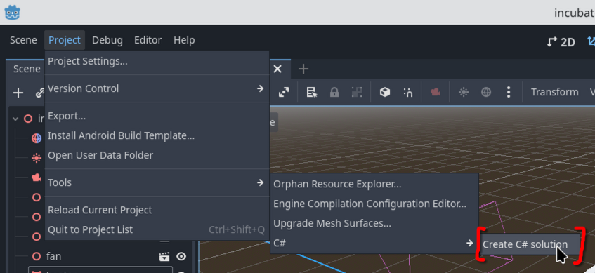
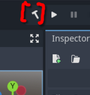
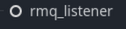
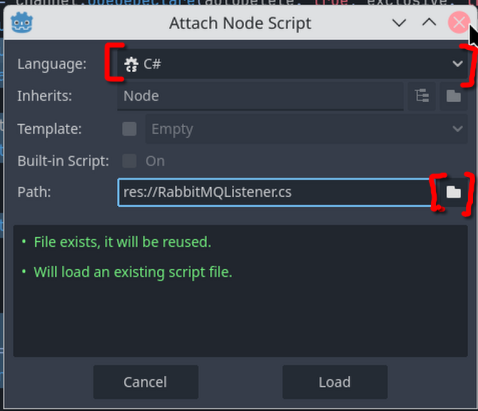
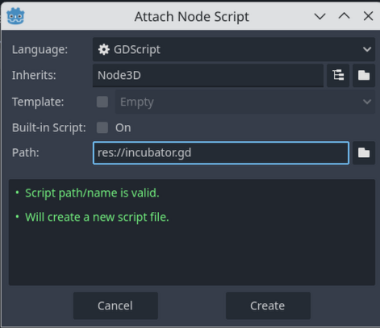
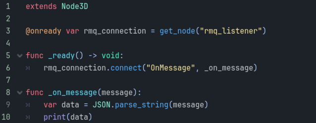
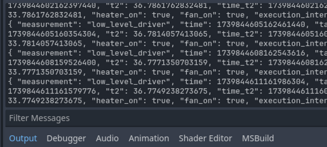

3-IncubatorDT
This tutorial will connect the visualisation created in the last part with the simulated incubator over RabbitMQ. We will have the following steps:
- Set up the C# project
- Start listening to RabbitMQ messages
- Display the data from RabbitMQ
- Add a button to open the lid
- Animate the lid opening
This tutorial is based on the existing incubator visualization created by Lisa Maria Huynh.
a. Set up the C# project
- 1. In the project, click on the 'Project' menu, then 'Tools', then 'C#', then 'Create C# solution'.

- 2. Close Godot.
- 3. Copy the 'incubator.csproj' located next to this html file to your project folder. If asked, overwrite the 'incubator.csproj' in that folder.
- 4. If you didn't overwrite the file, this means your project is named something else. That's fine. Delete the file named 'YOUR_PROJECT_NAME.csproj'. Rename 'incubator.csproj' so that it replaces the file you just deleted.
- 5. Open up Godot and go back to the project. There should be a little hammer icon in the top-right. Click it to build the C# project.
- Note: Godot will auto-build the project before running, so you can just hit the play button when you want to run.

b. Start listening to RabbitMQ messages
We're very close to getting the data from RabbitMQ into Godot. At the end of this section, we'll have a Digital Shadow.
- 6. From the 'scripts/' folder, copy the 'RabbitMQListener.cs' file to your project directory. This has the defaults for RabbitMQ set up already.
- 7. Create a new node in the scene tree by right-clicking the incubator node at the top of the pane on the left. Find the 'Node' type, which has a white ring icon. Rename the node to 'rmq_listener'.

- 8. Right-click this new node, and select 'Attach Script'.
- 9. At the top of this new node, by 'language', select 'C#'
- 10. On the right, select the folder icon, and select the 'RabbitMQListener.cs' file.

- 11. Right-click on the top-most node in your scene tree. It should be named 'incubator_root'. Select 'Attach script'. The defaults should be okay, see the figure below.

- 12. Enter the below text into this script file. Note the tabs for spacing in the funcs (short for functions). GDScript is like Python, where the spacing matters. Below is a figure of it within Godot to help you if needed.
- 13. What this does is: a) finds the 'rmq_listener' node in the tree, b) connects to it, and c) for every message received, print it out.
extends Node3D
@onready var rmq_connection = get_node("rmq_listener")
func _ready() -> void:
rmq_connection.connect("OnMessage", _on_message)
func _on_message(message):
var data = JSON.parse_string(message)
print(data)

- 14. Follow the instructions to make sure that the simulated incubator DT is running on your machine. Ex. By running 'python -m startup.start_all_services' in the 'incubator_dt/software/' folder.
- 15. Go back to Godot, and run the project.
- 16. If everything went right, then soon you'll see some debugging info. These are the RabbitMQ messages being read in Godot!
